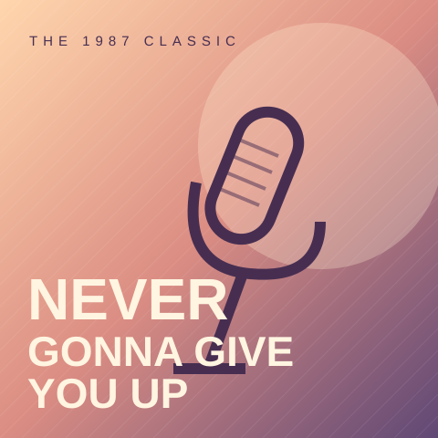

CLASSIC MODE经典四键
SCORE000000
Never Gonna Give You Up4 KEY · EASY 01
0COMBO

1987 / POPRICK ASTLEYNever Gonna
Never Gonna
Give You Up
Rick Astley · 官方 30 秒试听
4 KEY简单 ★01113 BPM
四分拍点 · 八分短连打 · 52 NOTES
DF·JK
音符到达光线时，按下对应按键演奏已暂停
准备好后，继续你的节奏。
S
FULL COMBONever Gonna Give You Up
RICK ASTLEY000000
—ACCURACY
0MAX COMBO